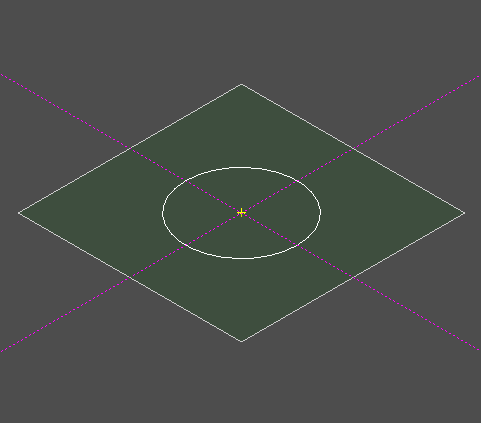
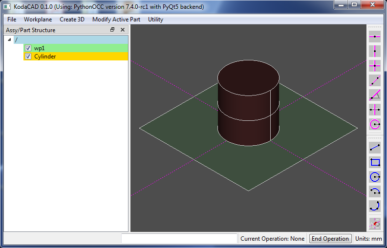
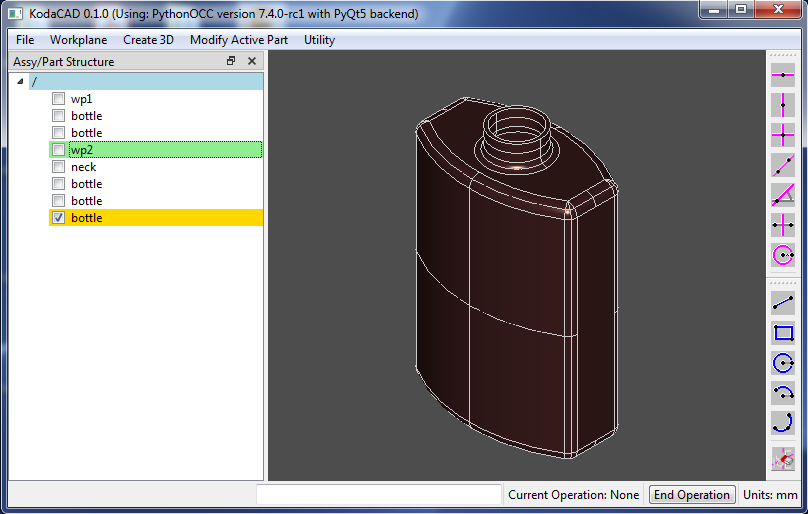

Getting Started with KodaCAD
Creating 3D models

- The basic paradigm for creating a 3D model is to start by drawing a sketch on a
2D workplane.
- The workplane contains two types of drawn elements: Construction and
Profile.
- Construction elements, as their name implies, are used to construct an
accurate layout. They are the dotted magenta colored lines, infinite in length.
- Where Construction elements intersect, 'selectable' yellow Points are
shown.
- Profile elements, if they form a closed loop, get converted to a wire
which is then used to create or modify 3D bodies.
- Both Construction elements and Profile elements are drawn by
clicking on Points or by entering values on the User Input widget.
The User Interface

- The main 3D Display window is the 3D view of workplanes and 3D parts.
- To the left of the 3D Display is the Tree View window, showing the
hierarchical relationship among Parts, Assemblies and Workplanes. In addition to
displaying hierarchical relationships, the Tree View window also allows user editing
of certain parameters, allows Parts, Assemblies and Workplanes to be shown/hidden
(using the checkboxes) and shows (by color):
- Which Part is Active (the part that will be acted upon by
the current modification or operation).
- Which Workplane is Active (the workplane that will be
acted upon by any toolbar buttons).
- Which Assembly is Active (Newly created parts will be added to
the active assembly).
- The Menu Bar is located across the top of the application window. In
general, 3D parts are created with a workflow that starts with the menu buttons on
the left (Workplane) and prcceeds to the right (Create, then
Modify).
- The Toolbar Buttons, located on the far right, are used to create drawing
elements on the Active Workplane.
- Along the bottom of the application window, from left to right are:
- A StatusBar, showing instructions, if any, for the user
- A User Input widget into which numerical values (v), 2D coordinates
(x, y), or other text (such as part name) can be entered.
- A Current Operation label, showing the current opertion.
- An End Operation button, allowing the user to end the current
opertion.
- A Units label, showing the currently selected units.
Navigation
Using a scroll-wheel mouse, the user can rotate, pan and zoom the model in
the 3D Display Window.
- LMB for rotation
- MMB to pan the view
- Scroll wheel to Zoom the view
- RMB for popup options (on both Display and Tree View)
Download & Installation:
KodaCAD is very much still in development and is not being made available
in an executable binary format. In order to run it, you need to have Python version 3.7
(or higher) and pythonOCC (version 7.4 or 7.5) installed on your computer. The easiest
way to get this (the way I did it) is to:
- Download and install Conda (Choose Python3, not Python2.7.)
- Once you have got that, set up a PythonOCC environment within Conda.
- Within that environment, install pythonocc-core and pyqt.
- Clone the KodaCAD GitHub repository onto your computer.
- Then from within the PythonOCC environment, run the file "kodacad.py".
Tutorial: Creating the Classic OCC Bottle
Step by step tutorial

Demo: Load STEP / Modify / Save STEP
Demonstration of Load STEP / Modify / Save STEP

Author and Maintainer of KodaCAD:
Doug Blanding
dBlanding@gmail.com